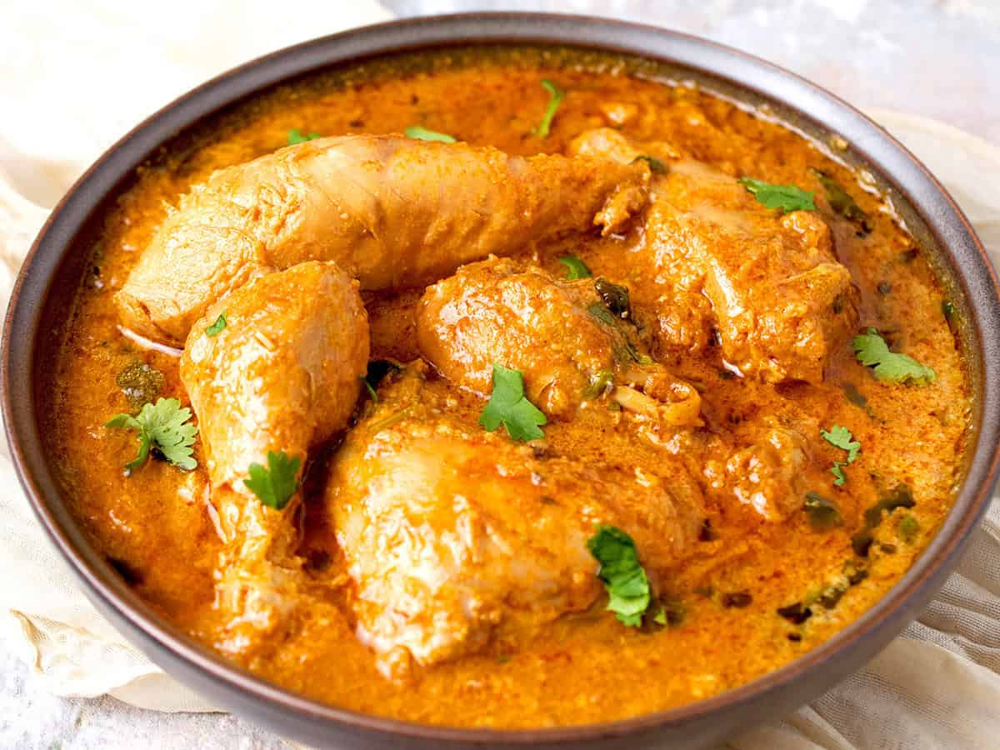

Easy Chicken Curry

Ingredients:
- 1 small onion, garlic and ginger, chopped
- 3 tablespoons curry powder
- 1 teaspoon ground cinnamon
- 2 skinless, boneless chicken breast
- 1 tablespoon tomato paste
- Half cup coconut milk
Steps:
Step 1 - Ingredients preparation.
- Seal the chicken in a pan with a little oil.
- Add in chopped onion, garlic, and ginger.
- Cook for 5 minutes to soften.
- Add in curry powder and cinnamon
- Stir and cook for a further minute.
- Add in tomato paste and coconut milk.
- Simmer for 10 minutes - until the chicken is cooked through.